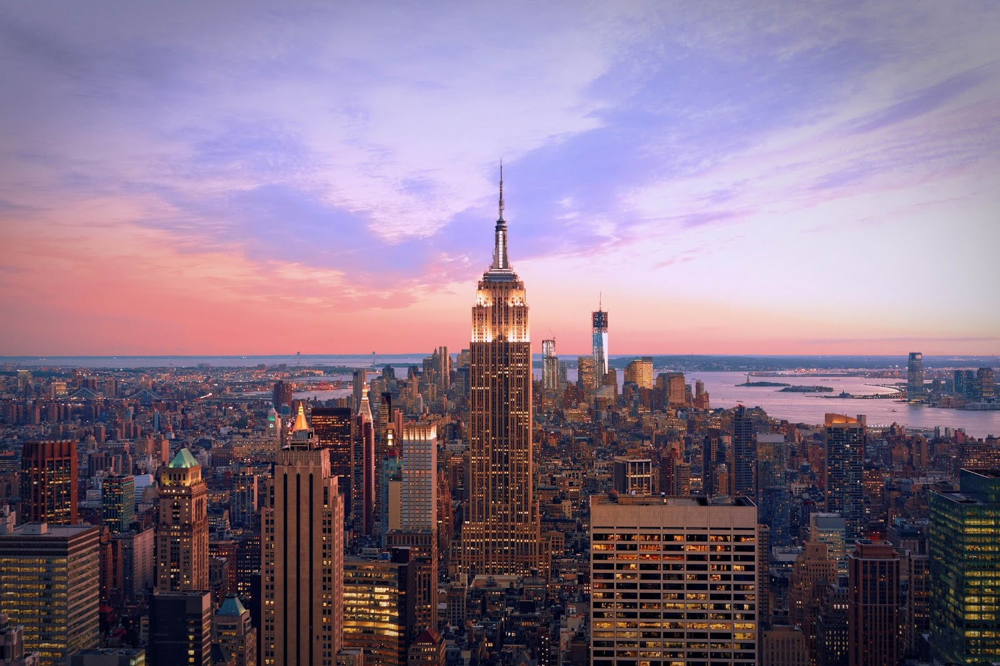

New York City

The City of New York, often called New York City or simply New York, is the most populous city in the United States. With an estimated 2016 population of 8,537,673 distributed over a land area of about 302.6 square miles (784 km), New York City is also the most densely populated major city in the United States. Located at the southern tip of the state of New York, the city is the center of the New York metropolitan area, one of the most populous urban agglomerations in the world, with an estimated 20.2 million people in its 2016 Metropolitan Statistical Area and 23.7 million residents in its Combined Statistical Area. A global power city, New York City has been described as the cultural, financial, and media capital of the world, and exerts a significant impact upon commerce, entertainment, research, technology, education, politics, and sports. The city's fast pace defines the term New York minute. Home to the headquarters of the United Nations, New York is an important center for international diplomacy.